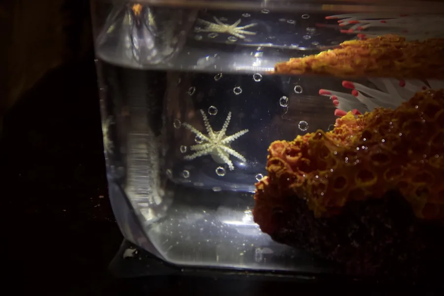
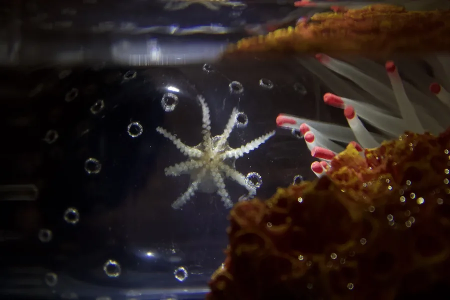
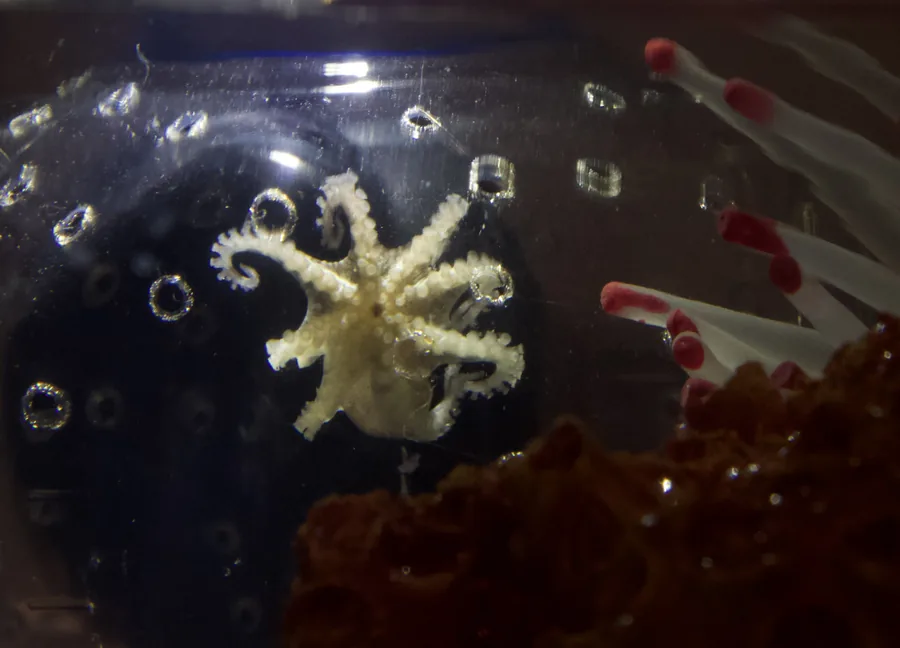
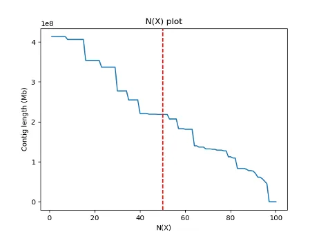
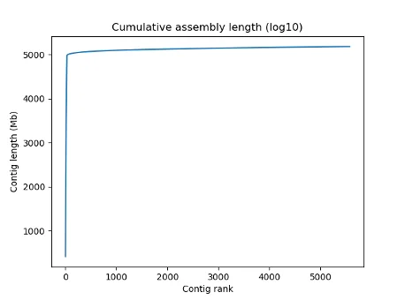

Cephalopods / Genome resource
Octopus chierchiae genome assembly



Workflow

Downloads
GENOME
| File | URL | Type | Size | MD5 |
|---|---|---|---|---|
| Haplotype-resolved Assembled Genome (chromosomes only, hap1) | Ochierchiae_hap1_scaffold_v1.0_20230204_scaffolds_final_chrom.fa.gz | Gzipped FASTA | 1.3 GB | 91bf2620fa15267a2ee6154c475f6978 |
| Unscaffolded contigs (hap1) | Ochierchiae_hap1_scaffold_v1.0_20230204_scaffolds_final_scaffolds.fa.gz | Gzipped FASTA | 39 MB | e4d69881d05137ed2848342fc44393f4 |
| Repeatmasker-masked assembly (primary chromosomes only) | Ochierchiae_hap1_scaffold_v1.0_20230204_scaffolds_final_chrom_masked.fa.gz | Gzipped FASTA | 410 MB | 948832d9d2dd2ff20649ce47ef792122 |
| Hi-C contact matrix | hap1_contact_map.hic | HIC | 2.5 GB | 444dc4579cb209ebebd68a6b32c9d9d9 |
| RepeatModeler 2.0 output (learned from O.chierchiae hap1 scaffolded assembly) | ochierchiae-families.fa | Fasta | 3.0 MB | a9f4d3718bb2d914dd5c649f9711750d |
| Repeat Annotation (against O.chierchiae hap1 scaffolded assembly) | Ochierchiae_hap1_scaffold_v1.0_20230221_repeatmasker_features.bed.gz | Gzipped BED | 663.3 MB | 3b2e2064a2ed45e1e8076dcab164664f |
TRANSCRIPTOME
| File | URL | Type | Size | MD5 |
|---|---|---|---|---|
| Assembled reference transcriptome (stringtie, unannotated) | Ochier_stringtie_merged_assembly_20230207.gtf | GTF | 52 MB | 9db68ca97be46682d12619760d747c75 |
| Assembled reference transcriptome sequences (stringtie) | Ochier_stringtie_merged_assembly_20230207.fa.gz | Gzipped FASTA | 32 MB | 66524aeca6a845ebee08be0d4f162dd2 |
| Assembled reference transcriptome sequence annotations (stringtie) | stringtie_merged_assembly_annotation_20230505.xlsx | Gzipped FASTA | 32 MB | 66524aeca6a845ebee08be0d4f162dd2 |
| O.bimaculoides transcriptome liftoff | Ochier_liftoff_from_Obimac_20230207.gff3 | GFF3 | 25 MB | 255427d6f9e72fb3b3529961c24614df |
| de novo Transcriptome assembly sequence (Trinity, unannotated) | Ochierchiae.Trinity.fa.gz | Gzipped FASTA | 96 MB | b6022ca6e1f5464be6137a8fc86d858e |
| de novo Transcriptome assembly alignment to reference genome (Trinity, unannotated) | Trinity_aln_to_ref_hap1.gff3.gz | Gzipped GFF3 | 83 MB | dd5b3ab0c43953160656a9015bea9c72 |
Stats


| Param | Value |
|---|---|
| Genome size | 5,180,130,439 bases |
| Total Number of chromosome scaffolds | 30 |
| Total Number of contigs | 5,569 |
| Largest scaffold | 413,096,176 bases |
| GC content | 35.87% |
| N50 | 218,401,579 bases |
| L50 | 9 |
| N90 | 76,540,371 bases |
| L90 | 25 |
| % of bases in chromosomes | 96.09% |
| Total length of scaffolded chromosomes | 4,977,408,424 bases |
| Number of gaps | 5,061 |
| BUSCO metazoa_odb10 | C:94.4%[S:93.6%,D:0.8%],F:3.5%,M:2.1%,n:954 |
| Number of genes | TBD |